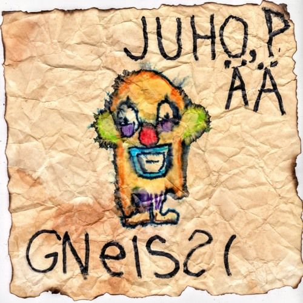

gNeissi
2018
Juho, PÄÄ & Gneissi Split EP

Monsanton asianajaja valmistautuu keplottelemaan tiensä ulos jälleen uudesta kiperästä tilanteesta
Monsanton asianajaja valmistautuu keplottelemaan tiensä ulos jälleen uudesta kiperästä tilanteesta.
Hänen on onnistunut löytää porsaanreikä perustuslaista, jonka turvin aikoo suorittaa prestidigitaationsa.
Hän puhdistaa korvansa ja aloittaa puolustuksensa harjoittelemisen sijoittamalla puhumansa kielen foneettiseen
aakkostoon kuuluvia äänteitä peräkkäin, muodostaen miellyttävän kuuloisia kokoelmia. Kas näin:
"Uhgrllagagagagaiaiaiaa, bababaijajaijaa zazazaa"
Niinkuin nettiselain vailla sivuhistoriaa
Kyllähän viattomatkin voi pestä käsiänsä
Ei mikään ole väärin jollei siitä jää kiinni
Asianajaja säpsähtää ja keskeyttää harjoituksensa tajutessaan äkillisesti äärimmilleen viedyn yksilön edun
tavoittelemisen sopimattomuuden ihmisten kaltaisten sosiaalisten olentojen keskuuteen. Tämä odottamanton
paljastus saa asianajajan jokaisen sanan kuulostamaan kuin ulosteelta tippumassa juomalasiin. Hän tuntee
itsensä kuin syöttötuoliin juuttuneeksi vompatiksi, joka ei ponnisteluistaan huolimatta saa sijoitettua turvonnutta
vatsaansa syöttötuolin tarjottimen lävitse. Hetken ponnisteltuaan hän kuitenkin huokaa helpotuksesta ja muistaessaan että
lopulta punaiseksi jättiläiseksi turvonnut aurinko nielee maan sekä taivaan ja että kaikki on turhaa
Hän jatkaa syömistä.
Omatunto painaa vähemmän kuin raha vaakakupissa
Tää ei oo kaunista mut tarkoitus pyhittää keinot
Ei mikään ole väärin jollei siitä jää kiinni
Hyttynen
Mua puri hyttynen, tarttukohan mulle joku tauti?
Eihän sitä koskaan voi tietää, sillä hyttysethän levittää...
Malariaa, dengue- ja keltakuumetta, jänisruttoa ja kenties mitä kaikkee muuta.
Aika epätodennäköistä, kyllä, mutta onhan niihin ihmisiä on kuollut
Hyttynen
Hyttynen
Hyttynen
Mua kutittaa, kihelmöi ja pistelee, tää on varmaan jotain vakavaa
Pitäisköhän mennä lukemaan uutisia, onko enää huomista?
Pitäisköhän lukittautua neljän seinän sisään eikä koskaan enää lähteä pois?
Naulata umpeen ovet sekä ikkunat, peittää mikrofonit teipillä
Mua ahdistaa, pelottaa, hävettää ja vähän huvittaa mut koitan elää sen kanssa
Hakkaan päätäni ikkunaan toivon että pääsen ulos niin kuin...
Hyttynen
Hyttynen
Hyttynen